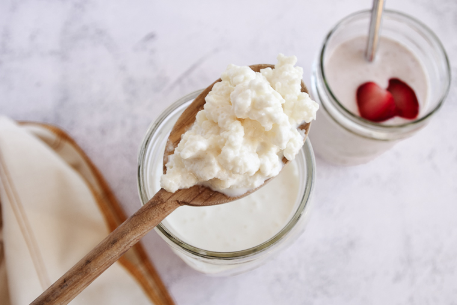

milk kefir

Description
This is a fermented dairy beverage with many health benefits, that taste great in many forms, like a smoothie and is easy to make.
Ingredients
- milk of choice
- kefir grains
- mason jar
- cheese cloth/coffe filter (optional)
- stainless steel mesh strainer and bowl
Steps
- sanitize mason jar and lid
- put 1 tsp kefir grains into mason jar
- select milk of choice, and pour into mason jar with grains, about 2 ups per tsp is the ratio
- cover mason jar with lid or cheesecloth/coffee filter
- if kefir grains are already actiated, let sit for 24 hrs for fermentation. If not activated, follow manufacturer instructions for activation, then proceed with regular fermentation once grains are active.
- once fermenetation is complete, filter out into a meauring cup and strainer, separting the grains from the fermented milk.
- pour kefir into another mason jar, then you can put the kefir grains back in the mason jar, and make more kefir again.